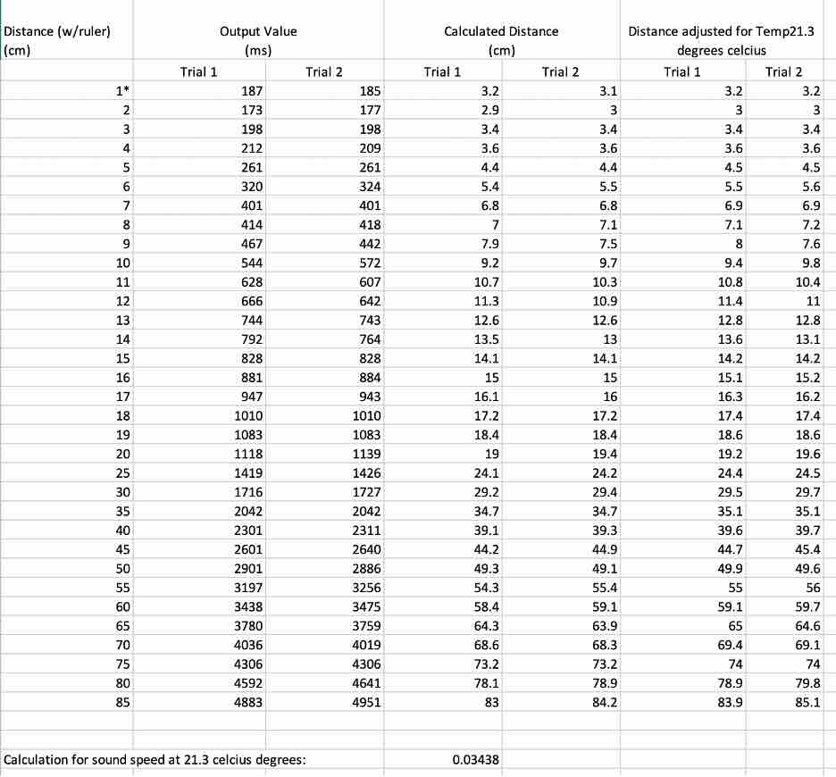
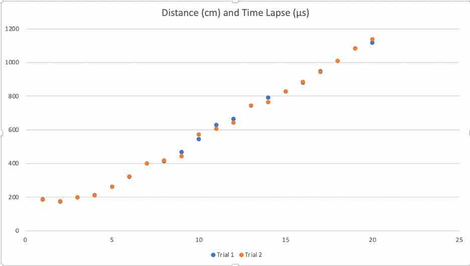
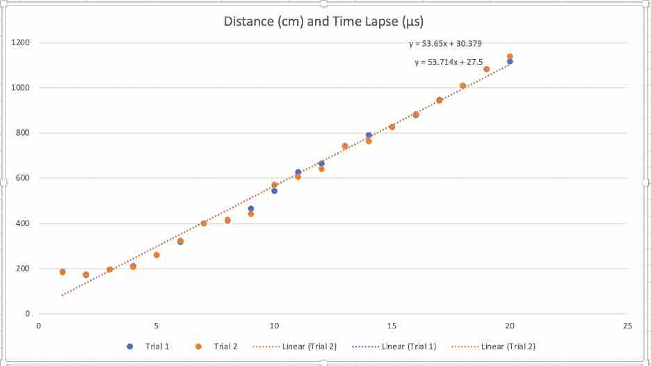
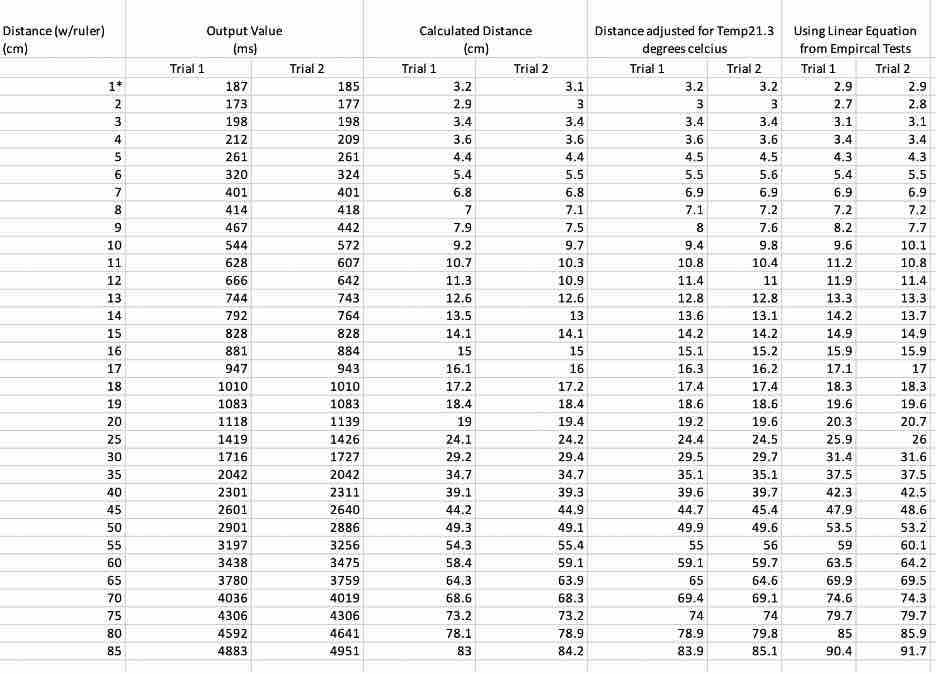
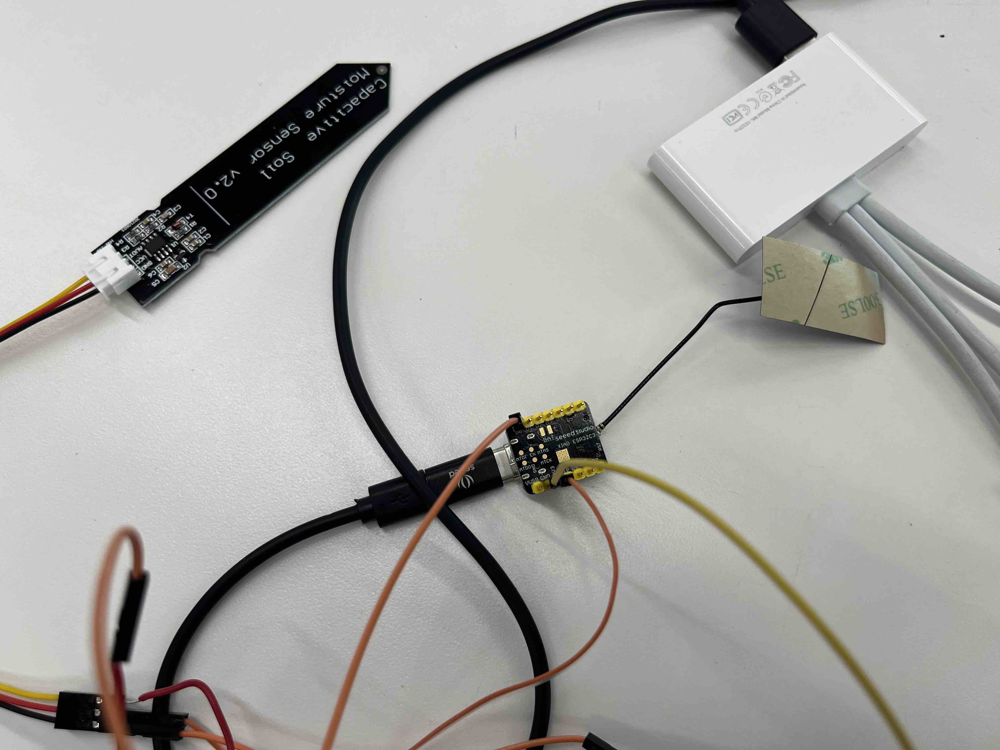
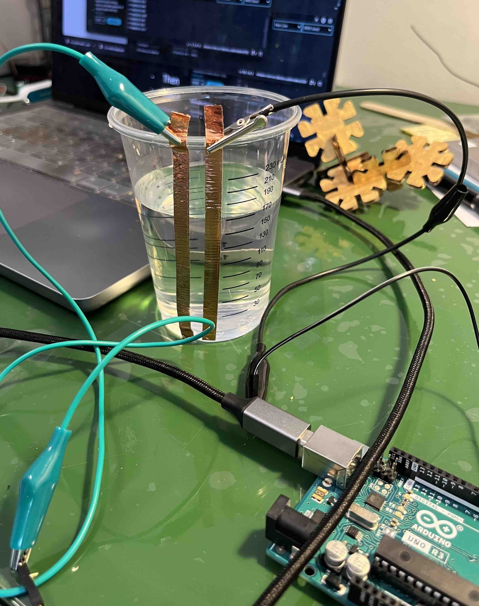

<br>
<h4>Sensors</h4>
There are several sensors that I will need for my ear sculpture and my final home garden project. <br>
<br>
<h5>"It is notta h(ear)" Sculpture: Ultrasonic Distance Sensor to Calculate Viewer Distance</h5>
For this sculpture, I want it to respond in a few ways based on the proximity of a viewer. For this, I used an ultrasonic distance sensor (HC-SR04). I found the datasheet on it and instructions on how to use it from two great sources: Sparkfun (https://www.sparkfun.com/products/15569) and How To Mechantronics (https://howtomechatronics.com/tutorials/arduino/ultrasonic-sensor-hc-sr04/).
Based on the data sheet, this sensor should detect from 2 cm to 400 cm which is well within the range needed for this application. There are 4 pins to this device: the power (ACC), ground (GND), trigger (TRIG) and receive (ECHO). The latter two pins are connected to digital pins 10 and 6 in the arduino board. This component needs 5V which means I am going to need a 4 AA battery source.
Here is a table of measurements taken for the near ranges. The distance with ruler was from the tip of the projected circles of the ultrasonic sensors.
<img src="01_Sensors_ProximitySensorCalibration_Stark_July12.jpg" class="photo" alt="Front View">
<figcaption>Set up for the testing of the ultrasonic distance sensor for small distance ranges.</figcaption>
Here is the table of data collected across two trials.
<table>
<tr>
<th>Distance (w/Ruler)
(cm)</th>
<th>Output Value
(ms) </th>
<th>Calculated Distance
(cm) </th>
</tr>
<tr>
<td>1</td>
<td>187, 185</td>
<td>3, 3</td>
</tr>
<tr>
<td>2</td>
<td>173, 177</td>
<td>2, 2</td>
</tr>
<tr>
<td>3</td>
<td>198, 198</td>
<td>3, 3</td>
</tr>
<tr>
<td>4</td>
<td>212,209</td>
<td>3, 3</td>
</tr>
<tr>
<td>5</td>
<td>261, 261</td>
<td>4, 4</td>
</tr>
<tr>
<td>6</td>
<td>320, 324</td>
<td>5, 5</td>
</tr>
<tr>
<td>7</td>
<td>401, 401</td>
<td>6, 6</td>
</tr>
<tr>
<td>8</td>
<td>414, 418</td>
<td>7, 7</td>
</tr>
<tr>
<td>9</td>
<td>467, 442</td>
<td>7, 7</td>
</tr>
<tr>
<td>10</td>
<td>544, 572</td>
<td>9, 9</td>
</tr>
<tr>
<td>11</td>
<td>628, 607</td>
<td>10, 10</td>
</tr>
<tr>
<td>12</td>
<td>666, 642</td>
<td>11, 10</td>
</tr>
<tr>
<td>13</td>
<td>744, 743</td>
<td>12, 12</td>
</tr>
<tr>
<td>14</td>
<td>792, 764</td>
<td>13, 12</td>
</tr>
<tr>
<td>15</td>
<td>828, 828</td>
<td>14, 14</td>
</tr>
<tr>
<td>16</td>
<td>881, 884</td>
<td>15, 15</td>
</tr>
<tr>
<td>17</td>
<td>947, 943</td>
<td>16, 16</td>
</tr>
<tr>
<td>18</td>
<td>1010, 1010</td>
<td>17, 17</td>
</tr>
<tr>
<td>19</td>
<td>1083, 1083</td>
<td>18, 18</td>
</tr>
<tr>
<td>20</td>
<td>1118, 1139</td>
<td>19, 19</td>
</tr>
<tr>
<td>25</td>
<td>1419, 1426</td>
<td>24, 24</td>
</tr>
<tr>
<td>30</td>
<td>1716, 1727</td>
<td>29, 29</td>
</tr>
<tr>
<td>35</td>
<td>2042, 2042</td>
<td>34, 34</td>
</tr>
<tr>
<td>40</td>
<td>2301, 2311</td>
<td>39, 39</td>
</tr>
<tr>
<td>45</td>
<td>2601, 2640</td>
<td>44, 45</td>
</tr>
<tr>
<td>50</td>
<td>2901, 2886</td>
<td>49, 49</td>
</tr>
<tr>
<td>55</td>
<td>3197, 3256</td>
<td>54, 55</td>
</tr>
<tr>
<td>60</td>
<td>3438, 3475</td>
<td>58, 59</td>
</tr>
<tr>
<td>65</td>
<td>3780, 3759</td>
<td>65, 64</td>
</tr>
<tr>
<td>70</td>
<td>4036, 4019</td>
<td>68, 68</td>
</tr>
<tr>
<td>75</td>
<td>4306, 4306</td>
<td>73, 73</td>
</tr>
<tr>
<td>80</td>
<td>4592, 4641</td>
<td>78, 78</td>
</tr>
<tr>
<td>85</td>
<td>4883, 4951</td>
<td>84, 84</td>
</tr>
</table>
Here is the code:
<div class="box">
<pre>
<code>
/*
For the Ear Sculpture
A proximity sensor at the front of the ear sculpture. Will sense how close someone is to the sculpture.
Based on this there will be various output which will be in a subsequent code version.
*/
//set the digital input and out pin numbers on the board
const int trigPin = 10;
const int echoPin = 6;
// defines variables
long duration;
int distance;
long waitTime = 4000;
unsigned long previousMillis = 0;
void setup()
{
pinMode(trigPin, OUTPUT); // Sets the trigPin as an Output
pinMode(echoPin, INPUT); // Sets the echoPin as an Input
Serial.begin(9600); // Starts the serial communication
}
void loop() {
unsigned long currentMillis = millis();
if(currentMillis-previousMillis > waitTime)
{
// Clears the trigPin
digitalWrite(trigPin, LOW);
delayMicroseconds(2);
// Sets the trigPin on HIGH state for 10 micro seconds
digitalWrite(trigPin, HIGH);
delayMicroseconds(10);
digitalWrite(trigPin, LOW);
// Reads the echoPin, returns the sound wave travel time in microseconds
duration = pulseIn(echoPin, HIGH);
Serial.print("Duration: ");
Serial.print(duration);
Serial.println (" ms");
previousMillis = currentMillis;
}
}
</code>
</pre>
</div>
Based on the formula for the speed of sound and time, one can convert the time into a distance. Here is the code for this.
<div class="box">
<pre>
<code>
// Calculating the distance
distance = duration * 0.034 / 2;
// Prints the distance on the Serial Monitor
Serial.print("Distance: ");
Serial.print(distance);
Serial.println (" cm");
</code>
</pre>
</div>
When you look at the values of distance against those calibrated with the ruler, I was impressed with the accuracy of the measurements. However, I found it was not within the accuracy ranges specified of 3mm.
This may be due to a number of factors with the largest factor being temperature and humidity. Here is a great discussion on this topic: https://nerdyelectronics.com/how-to-improve-readings-of-ultrasonic-sensor-temperature-and-humidity-compensation/. As noted in this article, both temperature and humidity are positively correlated with sound speed. Thus as it gets hotter and more humid, without any adjustments, the formula above would underestimate the distance.
Given Harvard's lab on the day the tests were conducted was 70.4 degrees fahrenheit (21.3 degress celcius), we'll calculate the conversion in the table for the different values. The speed of sound at this temperature is higher than the 0.034 cm/µs used at a value of 0.03438 cm/µs. I didn't measure the humidity in the lab so I can not factor this into the equation. However, given the results measured, one could infer what may be the humidity. To compensate for both factors, as noted in the article, we could use a DHT11 or DHT22 temperature and humity sensor. For my auditory sculpture, I don't need this level of accuracy and the form, but if I were building a self-driving robot, this level of accuracy would be needed.

<figcaption>Spreadsheet of data collected and calculations accounting for the temperature in the lab.</figcaption>

<figcaption>Graph of the data.</figcaption>

<figcaption>Trendline and linear equation for the data.</figcaption>
This equation is given x, find y. So to find x (distance) we would need: (y-30.379)/53.65. I then decided to drop the 1 cm reading and the formula for distance became:
<ul>
<li>(y-30.379)/53.65</li>
<li>(y-27.5)/53.714</li>
</ul>
So took the equation: (y-28.94)/53.682. This was used to calculate updated values of distance.

<figcaption>Table updated with distance values based on the formula. If I were to do it again, I would take more data inputs at longer distances.</figcaption>
I also designed the base for the ear sculpture as well with this component integrated. I was going to put the output speaker device on the front but decided against this from an aesthetic perspective. Instead, will look to put the speakers on the sides of the sculpture.
<img src="02_Sensor_ProximitySensorinSculpture_Stark_July15.jpg" class="photo" alt="Front View">
<figcaption>Updated the sculpture's rectangle base with the holes for the proxmity sensor.</figcaption>
In terms of where I want to set the different actions of the sculpture, I wanted to make it based on our own sense of personal space. A good explanation of proxemics is on Science of the People (https://www.scienceofpeople.com/proxemics/). Personal space has come into greater public awareness during and since the pandemic. For this sculpture, I'll set the distance sensing ranges based on teh 4 major proxemic zones defined by anthropologist Edward Hall in the 1960s:
<ul>
<li>intimate space: 0 - 45 cm </li>
<li>personal space: 30 cm - 122 cm </li>
<li>social space: 122 cm - 366 cm </li>
<li>public space: 366 cm +</li>
</ul>
Given the overlap between intimate and personal space, I'll perhaps define a hard boundarly or in the borders of each range provide some oscillation between the output from one and the other which mimics the variability in real life.
You can find the rest of the making of this ear sculpture will be completed in the Output section.
<br>
<br>
<h5>Home Plant Garden: Capacitive Soil Moisture Sensor</h5>
For the home garden project, a key component are the connected sensors for each plant and for the water.
For each of the IoT sensors I needed to ensure it as equiped with the necessary input sensors and also the way to communicate with the central home garden hub. For this, a Xiao ESP32-C3 board is used which supports wifi and also a capacitive soil moisture sensor v2.0
I set up this board using these instructions:
https://how2electronics.com/getting-started-with-seeed-xiao-esp32-c3-board/
In an earlier exercise, I had used a soil moisture sensor based on resistive technology which had to be turned on and off in order to minimize corrosion. It is also senseitive to levesl of fertilizer according to the research I did.
In order to calibrate this sensor, I took dry readings first (3165, 3310, 3319) and then submerged into water (1277,1311, 1294). I translated the moisture into percentage using the map() function.
Translate this moisture into percentage using map(); function.
Finally, I created a soil sensor class and runtime as a start of the soil sensor.
<div class="box">
<pre>
<code>
/*
Soil Moisture Sensor
// define full range from wet to dry based on calibration of sensor completely dry and immerse in water.
int defaultDry = 3325;
int defaultWet = 1250;
int moistureVal;
unsigned long previousMillis = 0;
long delayTime = 1000;
class SoilSensor
{
// Class Member Variables
// These are initialized at start up
int moistPin;
int wet;
int dry;
public:
SoilSensor(int pin)
{
moistPin = pin;
wet = defaultWet;
dry = defaultDry;
}
void Update()
{
int moistureVal = analogRead(moistPin);
Serial.println(moistureVal);
int percentageHumidity = map(moistureVal, wet, dry, 100, 0);
Serial.print("Moisture Percentage:");
Serial.print(percentageHumidity);
Serial.println("%");
}
};
SoilSensor soil(D0);
// the setup function runs once when you press reset or power the board
void setup() {
Serial.begin(9600);
}
// the loop function runs over and over again forever
void loop() {
unsigned long currentMillis = millis();
if(currentMillis-previousMillis>delayTime){
soil.Update();
previousMillis = currentMillis;
}
</code>
</pre>
</div>

<figcaption>Set up of the microcontroller and the soil moisture sensor.</figcaption>
<h5>Home Plant Garden: Water Level Sensor</h5>
Another component of the Home Plant Garden (HPG) is automated watering. For this, there will also need to be a sensor to detect water levels of the remote water sources around the home. As an early prototype, I wanted to create a simple capacitive sensor for detecting water levels in a container. My set up was very simple.

<figcaption>Set up for the recording of values from the capacitive water container sensor.</figcaption>
The code I used was also simple from the sample (Note to self: need to change to a class for "WaterSensor")
<div class="box">
<pre>
<code>
long result; //variable for the result of the tx_rx measurement.
int analog_pin = A3;
int tx_pin = 4;
void setup() {
pinMode(tx_pin, OUTPUT); //Pin 4 provides the voltage step
Serial.begin(9600);
}
void loop() {
result = tx_rx();
Serial.print("***RESULT:");
Serial.println(result);
delay(1000);
}
long tx_rx(){ // Function to execute rx_tx algorithm and return a value
// that depends on coupling of two electrodes.
// Value returned is a long integer.
int read_high;
int read_low;
int diff;
long int sum;
int N_samples = 3; // Number of samples to take. Larger number slows it down, but reduces scatter.
sum = 0;
for (int i = 0; i < N_samples; i++){
digitalWrite(tx_pin,HIGH); // Step the voltage high on conductor 1.
read_high = analogRead(analog_pin); // Measure response of conductor 2.
delayMicroseconds(100); // Delay to reach steady state.
digitalWrite(tx_pin,LOW); // Step the voltage to zero on conductor 1.
read_low = analogRead(analog_pin); // Measure response of conductor 2.
diff = read_high - read_low; // desired answer is the difference between high and low.
sum += diff; // Sums up N_samples of these measurements.
}
return sum;
}
</code>
</pre>
</div>
Here are the results got calibrated against the water mL readings on the plastic cup.
<table>
<tr>
<th>Water Volume
(mL)</th>
<th>Readings from Capactive Sensor (recorded 4 values) </th>
</tr>
<tr>
<td>30</td>
<td>154, 287, 369, 727</td>
</tr>
<tr>
<td>50</td>
<td>440, 475, 329, 213</td>
</tr>
<tr>
<td>70</td>
<td>400, 372, 502, 570</td>
</tr>
<tr>
<td>90</td>
<td>560, 612, 900, 876</td>
</tr>
<tr>
<td>110</td>
<td>706, 727, 669, 578</td>
</tr>
<tr>
<td>130</td>
<td>839, 881, 721, 766</td>
</tr>
<tr>
<td>150</td>
<td>740, 894, 933, 1195</td>
</tr>
<tr>
<td>170</td>
<td>968, 995, 898, 827</td>
</tr>
<tr>
<td>190</td>
<td>1069, 1385, 1059, 1060</td>
</tr>
<tr>
<td>210</td>
<td>1072, 1305, 1416, 1134</td>
</tr>
<tr>
<td>230</td>
<td>1200, 1494, 1161, 1075</td>
</tr>
</table>
The readings taken across the 4 values at each increment of the calibration varied greater than I thought. Reading some of the details on capacitive sensors, I may get more accurate readings if the copper tape was submerged in the water. However, I was looking for a non-contact approach to this capacitive sensor so that it would last longer. There is variations of higher values for greater amount of water in the plastic cup. For the purposes of my project, I do not need at the mL level accuracy for the container water levels. What will be more important is how robust is this method when applied to containers of various materials and sizes. It would be nice if there was not a calibration neeed for the water containers that a garden owner has around their home.
More research is needed in these areas. A few areas I will also check out as my home plant garden project evolves:
<ul>
<li>https://maker.pro/arduino/projects/arduino-liquid-level-meter-with-simple-homemade-sensor</li>
<li>https://robotsbigdata.com/docs-arduino-water-sensor.html</li>
</ul>